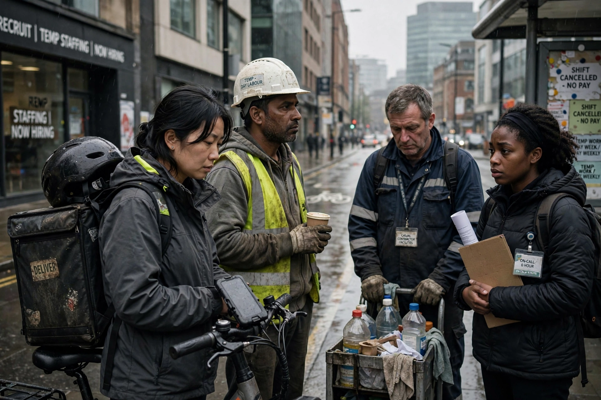

The precariat is a social class formed by people suffering from precarity, who exist without predictability or security, affecting material and psychological welfare. The term, a portmanteau of precarious and proletariat, was popularised by economist Guy Standing in The Precariat: The New Dangerous Class (2011).
Members lack seven forms of labour-related security: labour market, employment, job, work, skill reproduction, income, and representation security. They do gig, temporary, zero-hours, or intermittent work without occupational identity or benefits.
Standing argues the precariat, distinct from the working class, is vulnerable to populism unless offered policies such as basic income. Critics dispute that it is a coherent class.
See also: Precarious work, Basic income